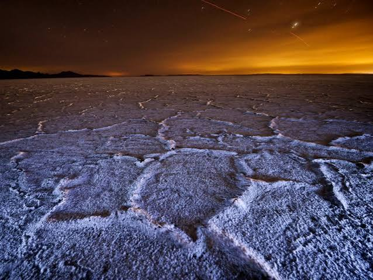

I grew up in Utah, and some of my favorite views are >after the sun goes down

What I like most is how different each spot feels. Some nights I want to be somewhere completely quiet. and other nights I just want to get food with friends.
Built by Kayson Larson · BMIS 235